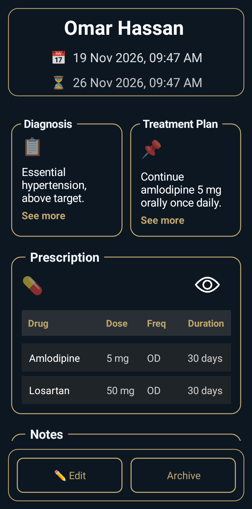

Guides du produit
Dossiers patients et documentation des consultations
MedicalSpace réunit l’historique du patient et les informations de chaque consultation. Relisez les visites précédentes, documentez l’évaluation actuelle et gardez les étapes du suivi dans leur contexte.
Télécharger sur Google Play Agrandir la capture
Agrandir la captureHistorique des visites datées
Retrouver les consultations précédentes
L’historique présente plusieurs visites datées. Ouvrez celle qui vous intéresse pour relire les informations saisies à ce moment-là. Cette continuité ne dispense pas le médecin de vérifier leur exactitude et leur pertinence pour la situation actuelle.
Documenter dans le contexte de la visite
Consignez le motif, le diagnostic, le plan thérapeutique et les notes. Les ordonnances et constantes enregistrées se consultent avec la visite. Vérifiez le patient, les dates et les informations médicamenteuses avant validation. Si vous utilisez la saisie vocale, relisez et corrigez le texte obtenu plutôt que de supposer une transcription parfaite.
Étapes d’utilisation
- Ouvrez le dossier et consultez les visites datées.
- Ouvrez ou créez la visite concernée et documentez la consultation.
- Vérifiez ordonnances, mesures et suivi avant validation.
Dans l’application
Captures originales. Dossiers patients et discussion clinique fictifs ; coordonnées privées exclues.
Agrandir la captureHistorique des visites datées


Agrandir la captureDiagnostic et plan de traitement
 Agrandir la capture
Agrandir la captureDétails de l’ordonnance
Questions sur cette fonction
Un patient peut-il avoir plusieurs visites ?
Oui. L’historique illustré comporte plusieurs consultations datées pour un même patient.
Les ordonnances et constantes sont-elles liées à la visite ?
Oui. Les parcours présentés montrent ces informations dans le contexte de la consultation.
Les dossiers illustrés sont-ils réels ?
Il s’agit de dossiers fictifs préparés pour le site, présentés dans l’interface réelle sans exposer l’historique médical d’un patient réel.